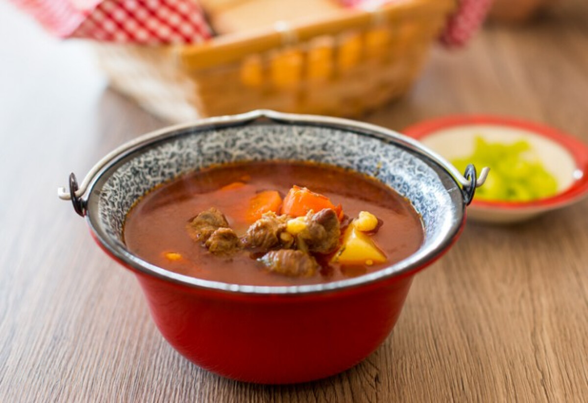

Hungarian Goulash

Desciption:
Though there are many debates about what the true authentic hungarian goulash (written as gulyás in hungarian) consists of, there is one thing that all variations have in common: a lot of paprika. Considered to be Hungary's national dish, this stew is made of few ingredients, yet it yields a lot of incredible flavor.
Ingredients
- 3 tablespoons pork lard
- 680 gr yellow onions
- 30 grams Hungarian sweet paprika
- 680 grams stewing beef, cut into ~ 2 x 2 x 2 cm cubes
- 5 cloves garlic, minced
- 2 red bell peppers, seeded, membranes removed, cut into ~ 2 cm pieces
- 1 yellow bell pepper, seeded, membranes removed, cut into ~2 cm pieces
- 2 tomatoes, diced
- 2 carrots, diced
- 2 medium potatoes, cut into ~2 cm chunks
- 1.2 l beef broth
- 1 bay leaf
- 1 teaspoon salt
- 0.5 teaspoon freshly ground black pepper
- Optional: 0.5 teaspoon crushed caraway seeds
Instructions:
- In a dutch oven or a heavy soup pot, add the pork lard and melt it over medium heat
- Add onions and fry until they begin to brown (~ 7-10 minutes)>
- Add the stewing beef, cook until it begins to brown (~7-10 minutes)
- Add bell peppers, tomatoes, and garlic, cook for another 6-8 minutes.
- Remove the pot from the heat and stir in the paprika, salt, pepper and caraway (if using).
Caution! Bell pepper becomes bitter if burnt!
- Remove pot from stove, pour in beef broth and add the bay leaf
- Return pot to stove and bring to a boil on high heat
- Reduce heat to medium, cover the pot and let it simmer for 40 minutes
- Add carrots and potatoes, return to boil.
- Reduce heat to medium, cover the pot and let it simmer for another 30-40 minutes or until beef is tender
- Add salt to taste, remove bay leaf
Tip: serve with sour cream and some slices of white bread